<!doctype HTML>
<html>

<head>

<link rel="stylesheet" href="../../Style_sheets/Project_styles.css" type="text/css" />
<link href="../../Style_sheets/jquery.mCustomScrollbar.css" rel="stylesheet" type="text/css" />

<script type="text/javascript" src="http://use.typekit.com/gfg0phy.js"></script>
<script type="text/javascript">try{Typekit.load();}catch(e){}</script>

	<title>Caitlin Santone</title>
	
	<script type="text/javascript">

  var _gaq = _gaq || [];
  _gaq.push(['_setAccount', 'UA-29755784-1']);
  _gaq.push(['_trackPageview']);

  (function() {
    var ga = document.createElement('script'); ga.type = 'text/javascript'; ga.async = true;
    ga.src = ('https:' == document.location.protocol ? 'https://ssl' : 'http://www') + '.google-analytics.com/ga.js';
    var s = document.getElementsByTagName('script')[0]; s.parentNode.insertBefore(ga, s);
  })();

</script>
	
</head>
</html>

<body>

<div class='main'>

			<div class='running-text'>
			<p><b>Interior Architecture Thesis Exhibition</b></p>
			<p><i>2012 RISD Graduate Thesis Exhibition</i></p>
			<p><b>Date</b> 2012<br/>
			<b>Location</b> Providence Convention Center<br/>
			<b>Size</b> 250 sq. ft.<br/>
			<b>Design</b> Caitlin Santone, Jason Van Yperen, Sheilah Carroll, and Samantha Rose<br/>
			<b>Fabrication</b> Original design team and Yuki Kawae</p>
				
			<p>The design for the 2011 Master of Interior Architecture Thesis Exhibition emphasizes the theme of adaptive re-use of existing structures which is central to the department's philosophy. The exhibit was organized as a timeline, guiding visitors along sixteen vacant and underused Providence buildings which are now transformed through studentss theses projects. The brown and white single-ply cardboard panels which make up the entire exhibition were pre-fabricated and assembled on location over a period of three days. The entire installation was recycled following the two-week exhibition period.</p>
			</div>
	<div class="gallery-container">
	
			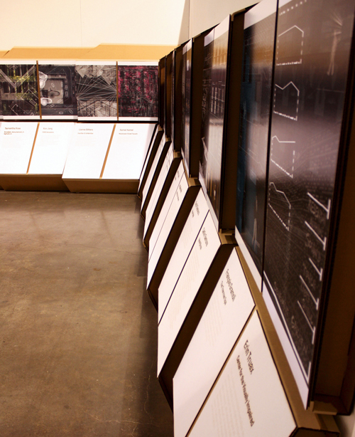
			
			<div class="caption"<p>View looking towards start of exhibition</p></div>
  
			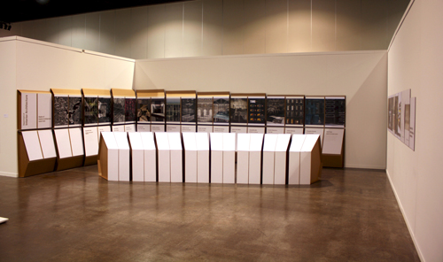
			
			<div class="caption"<p>View of entire exhibition</p></div>
			
			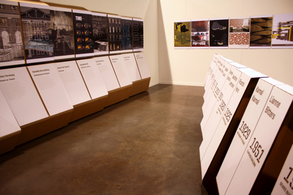
			
			<div class="caption"<p>Two walls were lined with a collage image by each student and their corresponding project title and thesis statement. All text was either laser-cut or -etched into the white cardboard and mounted on the brown cardboard structure.</p></div>

			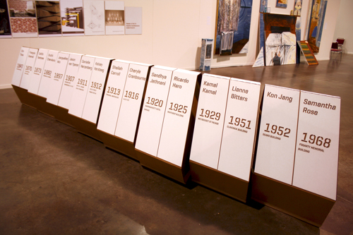
			
			<div class="caption"<p>The half-wall facing the projects contains students’ names, host buildings, and year. All projects are organized by date.</p></div>

			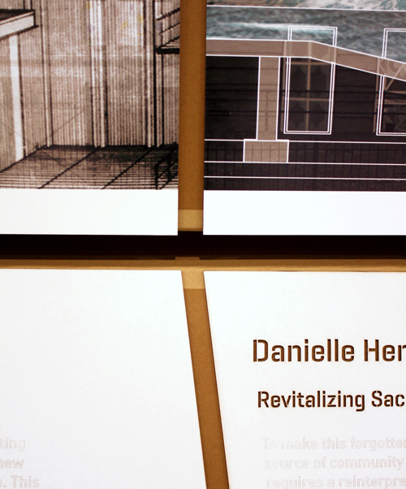
			
			<div class="caption"<p>Two projects side-by-side</p></div>
			
			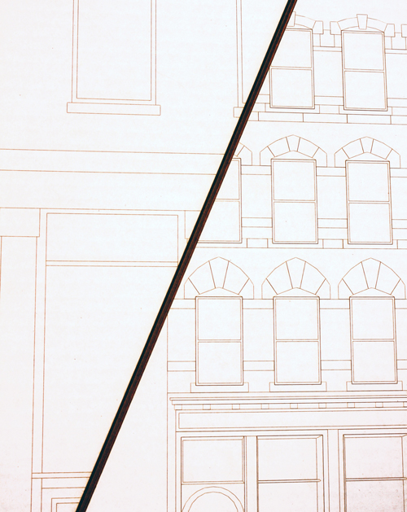
			
			<div class="caption"<p>Drawings of the existing buildings were etched into white cardboard and mounted on the panels on the exterior of the wasit-high structure that also contains the date panels.</p></div>

			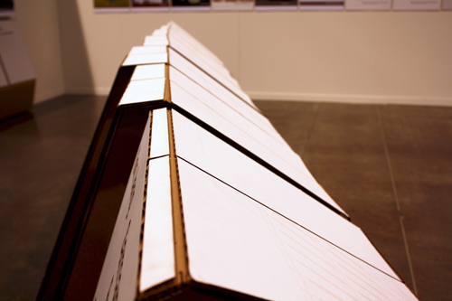
			
			<div class="caption"<p>Apex of half-wall structure</p></div>
			
			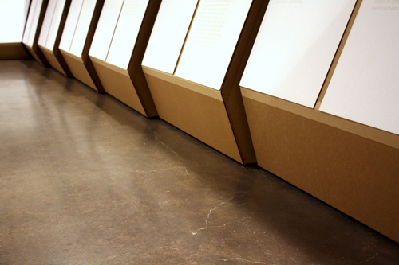
			
			<div class="caption"<p>Project panels meet the floor at an angle</p></div>
			
			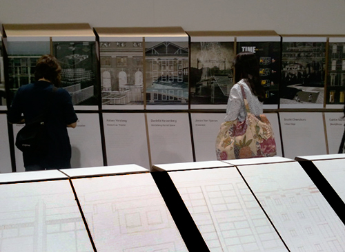
			
			<div class="caption"<p>Exhibition viewers</p></div>
			
			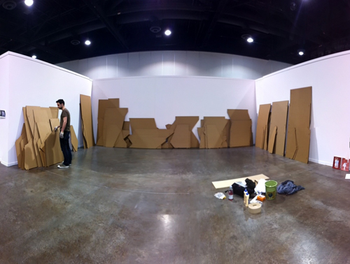
			
			<div class="caption"<p>Installation of prefabricated parts 1</p></div>
			
			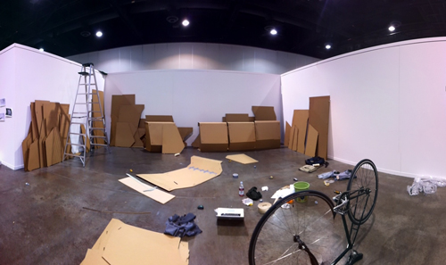
			
			<div class="caption"<p>Installation of prefabricated parts 2</p></div>
			
			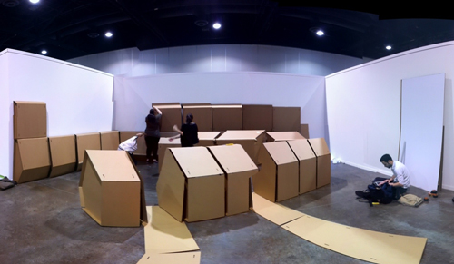
			
			<div class="caption"<p>Installation of prefabricated parts 3</p></div>
			
			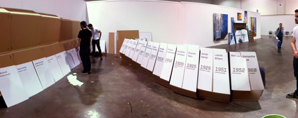
			
			<div class="caption"<p>Installation of prefabricated parts 4</p></div>
			
			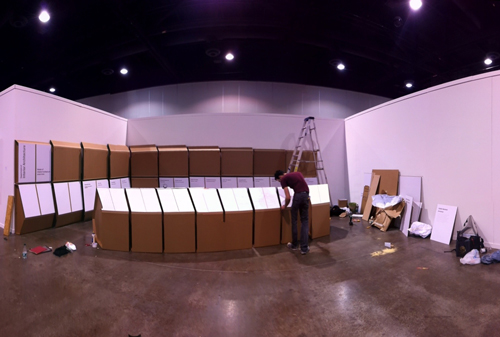
			
			<div class="caption"<p>Installation of prefabricated parts 5</p></div>
			
			
			


			
			
						
		
			
    </div>
			
  </div>
			
  <div class='clear'</div>
			
	
	</div>
</body>

<script src="https://ajax.googleapis.com/ajax/libs/jquery/1.7.2/jquery.min.js"></script>
<script src="http://ajax.googleapis.com/ajax/libs/jqueryui/1.8/jquery-ui.min.js"></script>
<script src="../../Scripts/jquery.mousewheel.min.js"></script>
<script src="../../Scripts/jquery.mCustomScrollbar.js"></script>
<script src="../../Scripts/project.js"></script>
</html>

